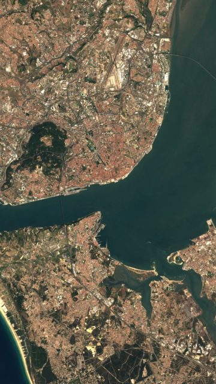

Quiz #5
Where on Earth is this?
Pick a place, then check the answer.
Lisbon
Portugal — The capital of Portugal, on the Tagus estuary

Satellite image: Sentinel-2 cloudless 2016 by EOX IT Services GmbH · Contains modified Copernicus Sentinel data 2016 · CC BY 4.0